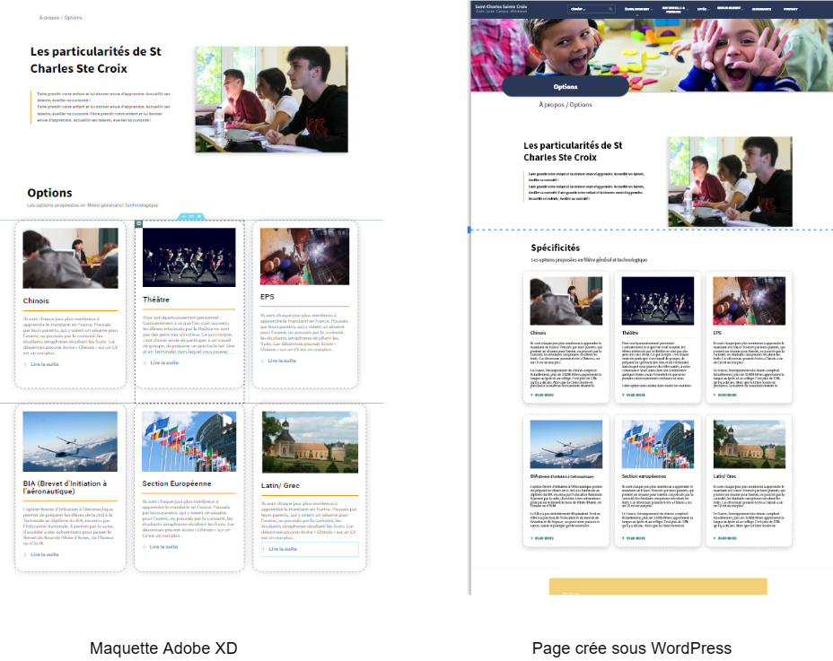
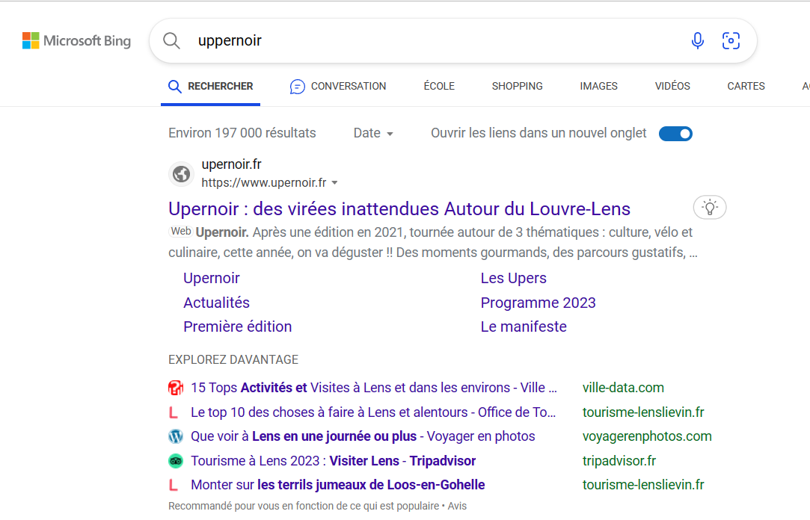
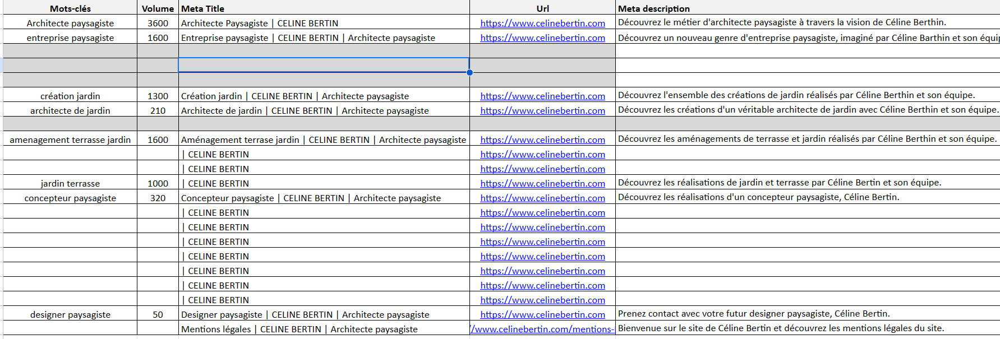

Projet GLPI
Un projet visant à centraliser et automatiser la gestion des ressources informatiques.


Informations du projet
- Catégorie : Gestion IT - GLPI
- Technologies utilisées : ESXi, Debian
- Type : Projet en formation
Détails
Ce projet visait à automatiser la gestion des ressources informatiques au sein d’une entreprise. Il inclut le déploiement de GLPI sous un environnement virtualisé avec ESXi et Debian.
Contexte du projet
Développement d'un système permettant aux entreprises de centraliser leurs demandes IT et d’optimiser la gestion de leur parc informatique. Ce projet visait aussi à améliorer l’accessibilité et la traçabilité des incidents.
Compétences utilisées
- üõ†Ô∏è D√©ploiement & Administration IT : Configuration de GLPI sous ESXi
- üîç Optimisation du r√©seau : Int√©gration avec l‚ÄôActive Directory
- üìä Gestion des ressources : Suivi des actifs et des interventions
Illustrations du projet


